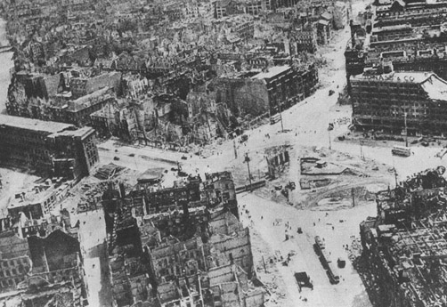

Battle for Berlin: The battle for Berlin was the last mayor offensive in Europe during the war. On April 15th 1945 the Red Army had gathered at the Oder river with a huge force consisting of 2.5 million soldiers, 6250 tanks, 7500 airplanes, 41.6 thousand artillery and mortars. At the time the Germans had around 1 million soldiers (many young teenagers and old men), 1.5 thousand tanks, 3300 aircrafts, 10.4 thousand artillery and mortars.
On the 16th the Soviets under the command of Marshal Zhukov unleashed a massive barrage of around a million shells on the German defensive line on the Seelow Heights. But the Germans had anticipated this and moved to defensive lines further back. This was not good for the Soviets as they had planned to take out the main defenses with the initial barrage, Zhukov made the decision to send waves of soldiers and tanks to breach through at large costs. The battle lasted for three days and the Soviets lost 30 thousand soldiers compared to the 10 thousand casualties by the Germans.
By the 18th and 19th the Soviet forces started to encircle the city from north and south, trapping German forces from retreating back in to the city. And on the 20th, Hitler’s bright day the Soviets sent him a present in form of a giant artillery barrage at the city center. On the 25th the city was encircled and .12th army sent from the west to help could not break through.
In the city there are believed to have been 90 thousand defenders, most were young boys from Hitler Youth and old men. The most common weapon the defenders had was the devastating Panzerfraust, an anti-tank warhead capable of destroying a tank at around 30-50 meters range. The battle for berlin raged on for weeks with large casualties on both sides. On the 30th of April Hitler took suicide and on May 2nd the Germans surrendered.
Casualties for the whole Berlin campaign are estimated around 260 thousand casualties (70-80 thousand dead) and 220 thousand casualties (92-100 thousand dead) and nearly half a million captured. The Red Army is also believed to have been responsible for up to 2 million rapes of German women.

Air photography over Berlin 1945. Source
Information might not be fully true, there are conflicting information